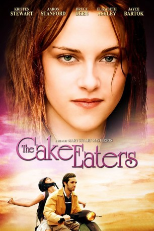
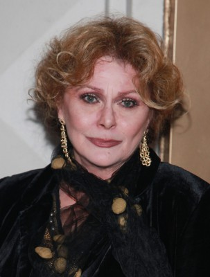
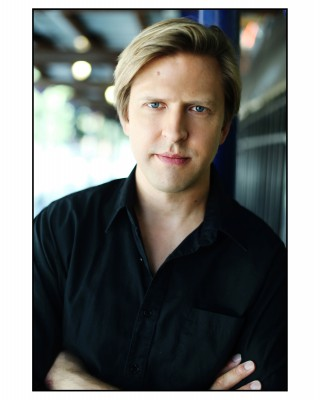
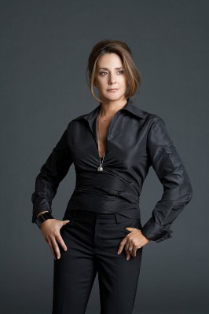
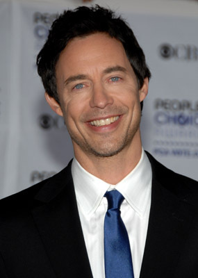
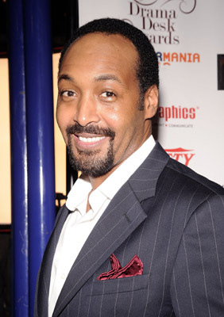

#3634 The Cake Eaters
 
 IMDB-Wertung: 6.4 / 10
IMDB-Wertung: 6.4 / 10  Metascore: 0
Metascore: 0 
Nach langer Zeit kehrt Guy Kimbrough nach einer gescheiterten Musikerkarriere zurück in die kleine Stadt, in der er aufgewachsen ist. Seine Mutter ist derweil gestorben und sein Vater, der Metzger Easy, ist eine Beziehung mit Marg eingegangen. Auch Guy versucht sein Liebesleben wieder aufzufrischen und sucht seine ehemalige Verlobte auf - doch die will nichts mehr von ihm wissen, da er sie einst sitzen ließ. Und Guys Bruder Beagle entdeckt ebenfalls die Liebe, er hat sich in Margs 15-jährige Enkeltochter Georgia, die an einer schweren Muskelkrankeit leidet, verguckt...
Jahr: 2007
Dauer: 85 Minuten
FSK: 12
Land: USA Studio: Screen Media FilmsTonspuren: DTS - ,
Untertitel: Englisch, Deutsch,
Auflösung: 1080p (1920x1080) Größe: 5509 MB
Genre: Drama, Komödie, Liebe
Regisseur: Mary Stuart Masterson
Drehbuch: Tommy O'Haver
Soundtrack:
Darsteller:
-  Elizabeth Ashley als Marg Kaminski
-  Jayce Bartok als Guy Kimbrough
 Bruce Dern als Easy Kimbrough
Bruce Dern als Easy Kimbrough Miriam Shor als Stephanie
Miriam Shor als Stephanie Aaron Stanford als Dwight 'Beagle' Kimbrough
Aaron Stanford als Dwight 'Beagle' Kimbrough Kristen Stewart als Georgia Kaminski
Kristen Stewart als Georgia Kaminski-  Talia Balsam als Violet Kaminski
-  Tom Cavanagh als Lloyd
 Melissa Leo als Ceci Kimbrough
Melissa Leo als Ceci Kimbrough-  Jesse L. Martin als Judd
- Dan McCabe als Teenage Boy #1
- Conor Romero als Teenage Boy #2
- Elizabeth Van Meter als Hippie Chick
 Lucas Papaelias als Mikey P.
Lucas Papaelias als Mikey P.- Elisa Pugliese als Stacy
- E.J. Carroll als Vito
- Devin Ratray als JJ
 Marylouise Burke als Babe
Marylouise Burke als Babe- Zoe Hunter als Girl on the Bus , uncredited
 Nicole Signore als Flea Market Shopper , uncredited
Nicole Signore als Flea Market Shopper , uncredited- Avery Rak als Young Guy
- Andrew George Jr. als Young Beagle
- Jeffrey Spiegel als Teenage Boy #3
- Robert Meo als Bobby
- Stephen Payne als Farmer Phil
- Elizabeth Girardeau als Maggie Lynn
- Grant Monohon als Hipster
- Dylan Denton als Boy
- Susan Gardner als Young Pregnant Bride
- Kara Duffus als Flea Market Shopper , uncredited
- Dave Dyshuk als Passerby , uncredited
- Mary E. Freeman als Flea Market Shopper , uncredited
- George Radel als Flea Market Shopper , uncredited
Datei: X:\2007(A-F)\Cake Eaters, The (2007, FSK12, 1920x1080).mkv seit 10.05.2016
Festplatte: HD 2007(A-Z)-2008(A-F)
 Es gibt insgesamt 65 Filme in der Gruppe '2007(A-F)'
Es gibt insgesamt 65 Filme in der Gruppe '2007(A-F)'